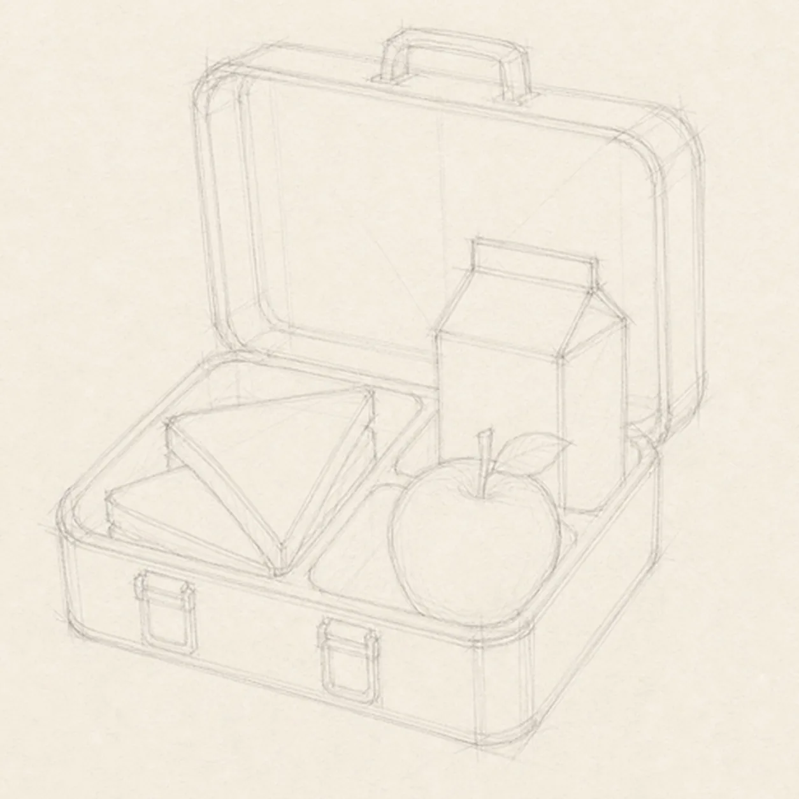
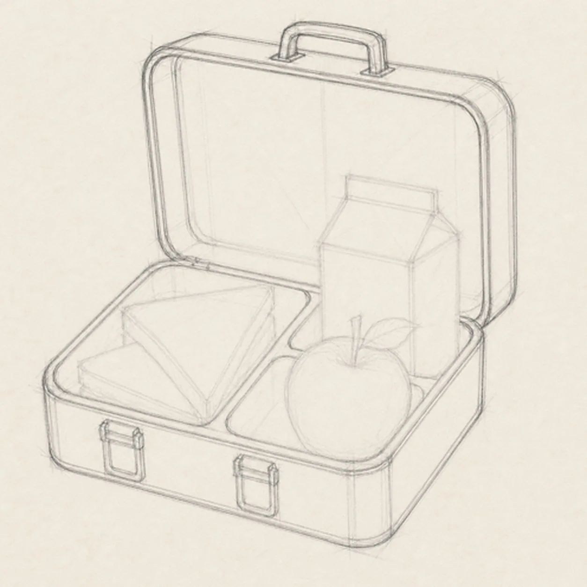
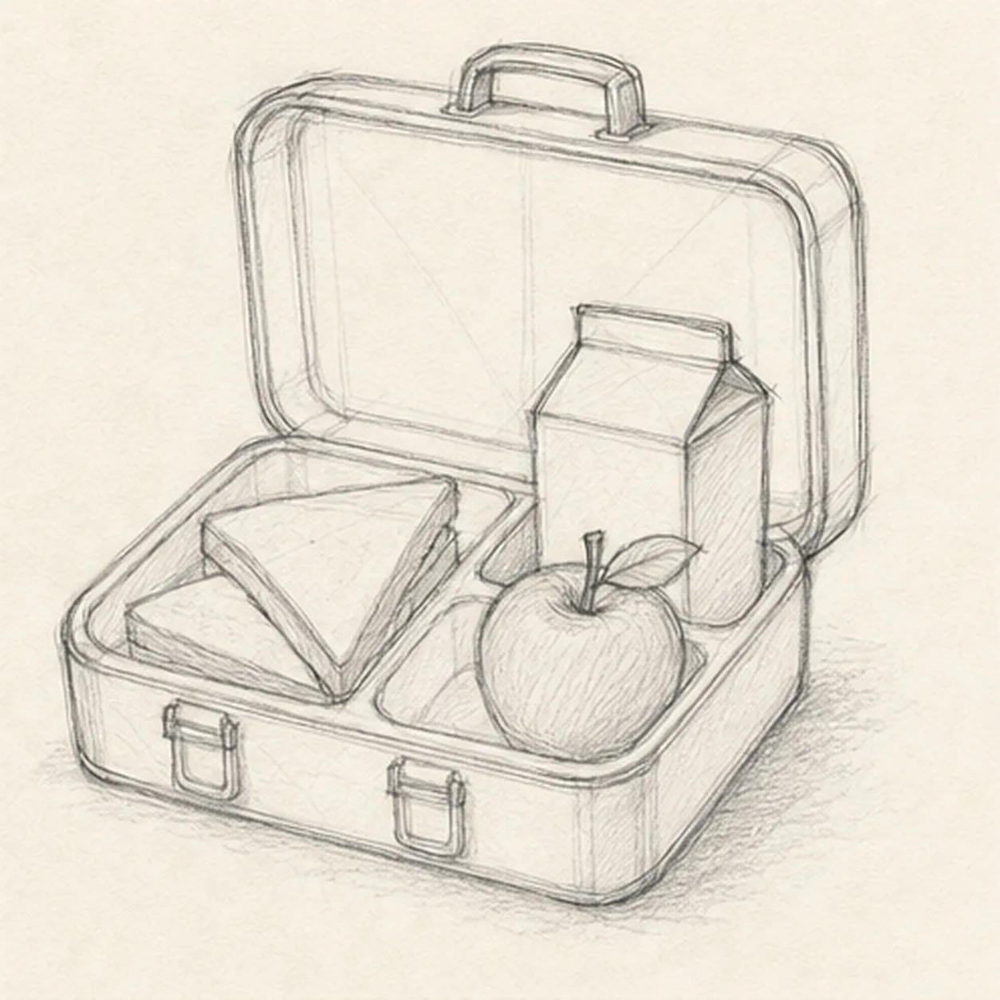
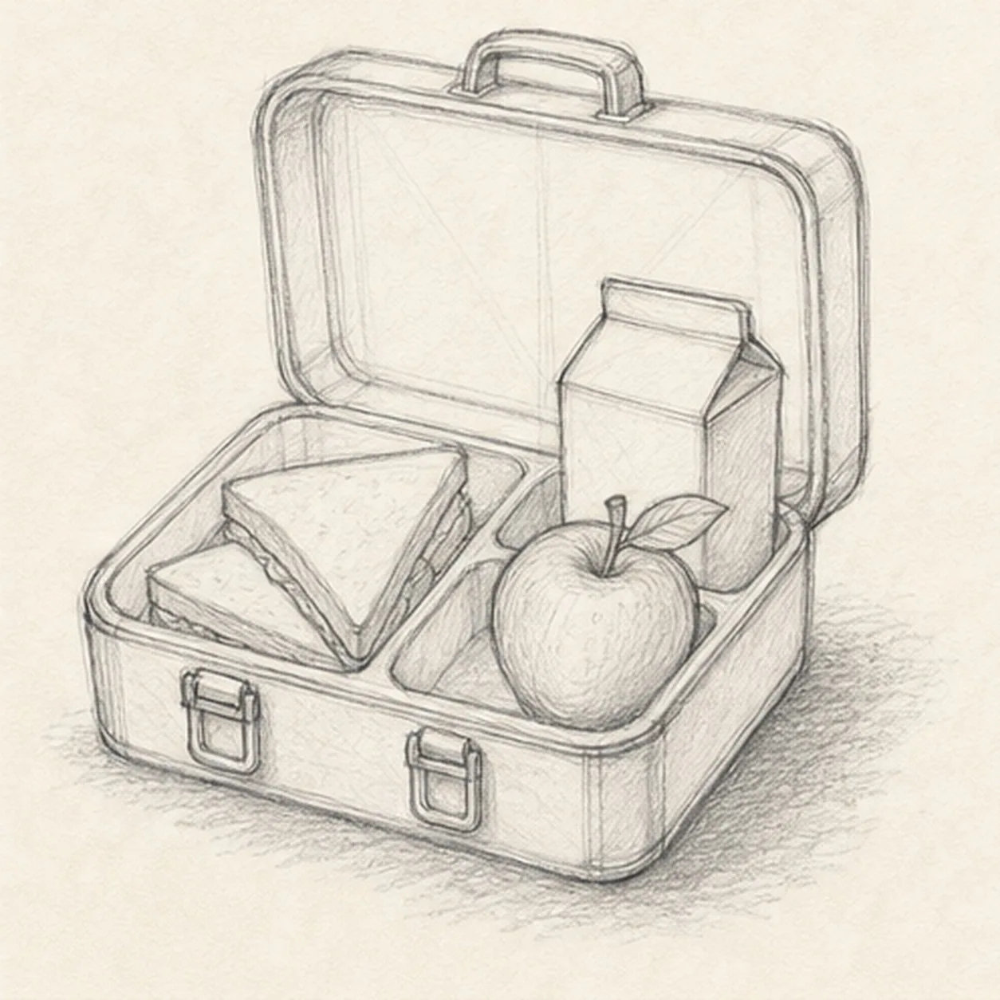
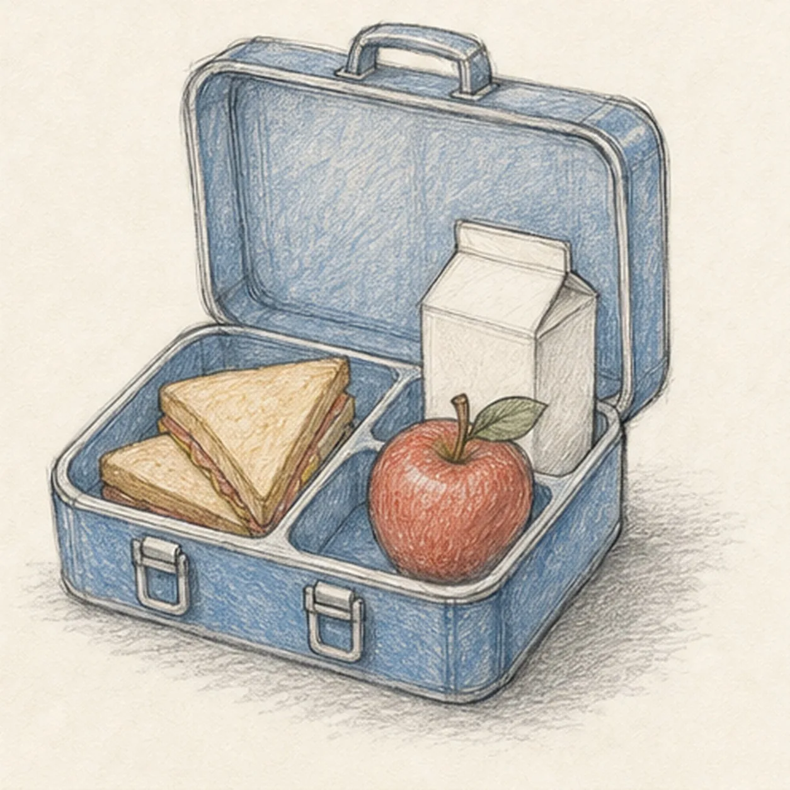

Pencil ready?
Let's draw a school lunchbox with an apple
Treat this as one small practice round: build the subject lightly, notice the shapes, then darken only the lines that help the finished sketch.
-
01

Block the open box
Use pale boxes and diagonals to place the shallow lunchbox base, upright lid, rounded-corner envelopes, interior rim, and three reserved food footprints in one three-quarter view.
Sketch tip: Ghost the two long perspective edges before touching down, then compare the empty wedges at both sides of the lid. Keep the food footprints pale and do not finish interior box lines that the lunch will cover.
-
02

Shape the shell and hardware
Wrap the guides with the loose lunchbox contour, keep all three compartment gaps open, and add one centered lid handle plus exactly two front latches.
Sketch tip: Rotate the page so each long box edge can come from one relaxed pull. Check that the handle follows the lid angle and that the two latches sit on the same receding front plane.
-
03

Pack the lunch
Add exactly two stacked sandwich triangles in the wide left compartment, one apple with a short stem and single leaf at front right, and one plain folded-top drink carton behind it.
Sketch tip: Draw the sandwich and apple as simple complete silhouettes before adding any filling or texture. Squint at the negative spaces between the three foods so none of them merges with the rim.
-
04

Clarify edges and textures
Refine only the established contours, add box corner seams, sandwich filling edges, apple dimples, carton fold planes, and the broken cast shadow beneath the lunchbox.
Sketch tip: Curve short apple strokes around the fruit and stop every sandwich line at an overlap. Keep the carton plain and use just enough fold detail to explain its top without turning it into packaging design.
-
05

Layer restrained color
Add dusty blue to the lunchbox, muted red to the apple, warm ochre to the sandwich, and pale neutral pencil to the carton while preserving white paper highlights.
Sketch tip: Pull colored-pencil strokes along each surface plane: long strokes across the lid, shorter curved strokes around the apple, and diagonal strokes across the bread. Build two light layers instead of one waxy pass.
-
06

Set the lunchbox finish
Strengthen selected keeper contours, deepen the existing graphite shadows, clarify highlights inside the established color areas, and soften only the pale construction that distracts.
Sketch tip: Count one box, one handle, two latches, three compartments, two sandwich triangles, one apple, and one carton. Change the lunch colors or fillings if you like, but keep the overlap plan clear enough to draw through.